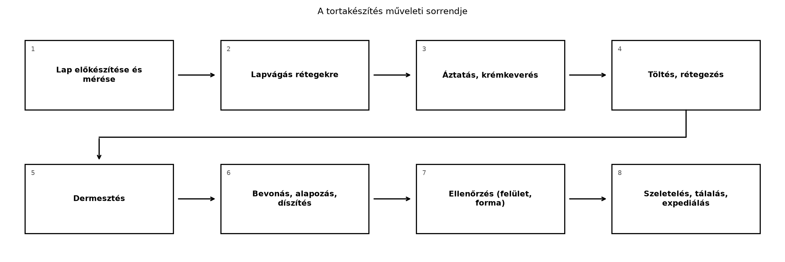

Egy 24 cm-es felvert tortalap reggel a hűtőből kikerül, és a rendelés szerint 16 egyenlő szeletet kell belőle készíteni. Ha a lapot ferde kézzel vágod, a vendég nem kap egyenlő adagot, a krém a bevonáson átüt, és a tálalásnál a szeletek borulnak. Ebben az alfejezetben a kikészített sütemények, elsősorban a torták felépítését és a tortakészítés műveletsorát tanulod meg a lap előkészítésétől a szeletelésig.
Definíció. Kikészített sütemény olyan cukrászati késztermék, amely legalább egy megsütött tésztarészből, továbbá töltelékből, bevonatból vagy díszítésből áll, és rendszerint hűtve, adagolva, tálcán vagy dobozban értékesítik.
A kikészített sütemények csoportjait a tésztatípus, a forma és a felhasználás szerint különítjük el. A legfontosabb csoportok:
| Csoport | Jellemzők | Példa |
|---|---|---|
| Torta | Nagy átmérőjű, szeletelt, rétegezett termék | Dobos torta, vajkrémes piskótatorta |
| Szelet | Kisebb, tálcás, majd darabolt termék | zserbó, gyümölcsös szelet |
| Tekercs | Tekert felvert tészta töltelékkel | piskótatekercs, kakaós tekercs |
| Minyon | Kisméretű, változatos töltésű és bevonatú darabáru | csokoládés mignon |
| Desszert | Kisméretű, gyakran egyedi kompozíció | puncsdesszert |
| Krémes, tejszínes | Leveles vagy forrázott tésztás, krémmel töltött, friss tejes termékcsoport | francia krémes, tejszínes képviselőfánk |
A torta fogalma a gyakorlatban a nagyobb átmérőjű, több rétegű, szeletelésre szánt kikészített süteményre szűkül. A torta mindig egy meghatározott műveletsort követ, mert a lap, a töltelék és a bevonat egyensúlya csak így lesz megfelelő.
A kikészített sütemények általános jellemzője a rétegzettség és a műveleti sorrend. A lapok, a töltelékek és a bevonatok egymáshoz illeszkednek, ezért hűtés nélkül nem tarthatók szobahőmérsékleten, ha tejszínes vagy tojásos krémet tartalmaznak.
A tortakészítést mindig a mise en place előzi meg: minden eszközt és alapanyagot előkészítünk, a krémet a hűtőbe tesszük, a lapot mérlegeljük, a tortatálcát letisztítjuk. A műveletsor tipikus lépései a következők:
Ábra. A folyamatot a következő diagram foglalja össze:

A lapot mindig hűtött, de nem fagyott állapotban dolgozzuk fel. A felvert lapnak rugalmasnak, egyenletes vastagságúnak kell lennie, repedés és tömör sáv nélkül. A lapot tortatálcára helyezzük, a felső púpot szükség szerint levágjuk, ha az egyenetlen. A levágott morzsát később a bevonat morzsás szélénél használhatjuk.
Hiba. Ha a meleg felvert lapot melegen vágod, a hab szerkezete összenyomódik, a lap tömör lesz, és a szeletek alacsonyak. Megelőzés. A piskótalapot sütés után teljesen ki kell hűteni, célszerűen dermedésig hűtőben tartani.
A tortalapot hosszú, fűrészes élű kenyérvágó késsel vagy tortalapvágóval vágjuk. A kést vízszintesen, a lappal párhuzamosan vezessük, és fűrészelő mozdulattal, egyszerre ne nyomjuk át a lapot. A felvert 6 cm magas lapot leggyakrabban 3–4 rétegre vágjuk. A 24 cm átmérőjű tortánál a rétegvastagság 12–15 mm, így a töltelékkel együtt a kész torta 6–8 cm magas lesz.
A lapvágást a következőképpen végezzük:
A felvert lapnál a vágás során ne törjük a lapot: a kézmozdulat legyen egyenletes, a kés ne legyen túl forró.
Az áztatás célja, hogy a felvert lap ne legyen száraz, és a krém ízei jobban érvényesüljenek. Az áztatószirup jellemzően híg cukoroldat, cukorszirup, kávé, citromlé vagy gyümölcslé. Az áztatást cukrászecsettel, kanállal vagy közvetlenül a töltőzsákból végezzük.
Higiénia. Az áztatószirupot a forralás után gyorsan lehűtjük, hűtve tároljuk, és mindig adagonként használjuk. A megmaradt szirupról dátumozva döntünk, mert a híg cukoroldatban a mikrobák is szaporodhatnak. A hűtési hőmérséklet szakmai szabály szerint 5 °C alatti tárolást jelent (ellenőrizendő: hatályos útmutató).
Az áztatásnál a szirup mennyiségét a lap tömegéhez igazítjuk. Túl sok szirup esetén a torta elázik, a krém kifolyik. Túl kevés sziruppal a termék száraz, a vágás széle törik. Jó kiindulási arány: a piskótalap tömegének 10–15 %-a szirup, de ez receptúránként változik.
A tortakészítésnél a krémet mindig a felhasználás előtt közvetlenül, a megfelelő hőmérsékleten keverjük be. A vajkrém, a főzött sárgakrém vagy a tejszínes krém hőmérséklete nem haladhatja meg a szobahőmérsékletet, mert a meleg krém a lapot ellágyítja. A krémkeverés célja, hogy a töltelék egyenletesen sima, formázható, és ne legyenek benne vajdarabkák vagy csomók.
Szabály. A krém felhasználási hőmérsékletét a krémet leíró alfejezet határozza meg. A vajkrémet 18–22 °C-on, a tejszínes krémet 4–10 °C-on dolgozzuk fel (ellenőrizendő). A krém ne legyen túl lágy, mert a torta szétcsúszik, de túl kemény se, mert a kenésnél a piskóta morzsálódik.
A rétegek töltését a tortakarikában vagy közvetlenül a tortatálcán végezzük. A tortakarika segít abban, hogy a torta pontosan hengeres legyen. A megsütött lapot a karikába helyezzük, a karika belső oldalát műanyag fóliával vagy sütőpapírral béleljük, majd a krémet egyenletesen rákenjük.
A töltés során a krémet mindig a réteg teljes felületére oszlassuk, a széleknél hagyjunk 2–3 mm-t szabadon, mert az a rétegzárásnál összenyomódik. A rétegeket egymásra helyezve enyhén nyomkodjuk le, de ne törjük a lapot.
Technológiai kulcspont. A metszet akkor egyenletes, ha a krémrétegek vastagsága azonos. A legjobb eredményt úgy érjük el, hogy a krémet mérjük, és rétegenként azonos tömeget kenünk.
A dermesztés a kikészített sütemények egyik legfontosabb művelete. A töltött tortát 0–5 °C-on addig hűtjük, amíg a krém megszilárdul, és a rétegek összeérnek. A dermesztés időtartama legalább 30–60 perc vajkrémes tortánál, tejszínes krémmél 1–2 óra (ellenőrizendő: üzemi technológiai utasítás). A dermesztés nélkül a bevonás nem lesz sima, a torta a vágásnál szétesik.
Kritikus pont. A tojásos, tejes, tejszínes krémmel töltött tortát a gyártási folyamatban 2 órán belül hűtőbe kell tenni, és hűtve kell tartani (ellenőrizendő). A dermesztéshez használt hűtő hőmérsékletét rendszeresen ellenőrizni kell.
A bevonás előtt a tortát szükség szerint vajkrémmel alapozzuk, hogy a felület sima legyen, és a morzsák ne szabaduljanak el. A bevonó anyagot a hőmérsékleti előírásnak megfelelően használjuk. A fondán bevonás 30–35 °C-on, a tükörbevonó 25–30 °C-on történik a korábban tanultak szerint (ellenőrizendő).
A bevonatot a torta közepétől a szélek felé kenjük, majd palettakéssel vagy forgóállvánnyal simítjuk. A forgóállvány a torta forgatásával lehetővé teszi az egyenletes réteg kialakítását.
A díszítés a következő szakaszban tanult művelet, de a tortakészítés műveletsorában a bevonás után, még hűtött állapotban végezzük. A díszítésnél a gravitáció és a bevonat hőmérséklete miatt gyorsan kell dolgozni, ezért a díszeket előre elkészítjük.
A szeletelést hűtött, jól dermedt tortán végezzük, forró vízbe mártott, szárazra törölt, hosszú pengéjű késsel. A forró kés a bevonatot és a krémet tisztán vágja, a morzsa kevésbé tapad a pengére. A tortát először a kívánt szeletszámnak megfelelően osztjuk.
A kerek torta szeletelése szögmérésre vezethető vissza. A teljes kör , ezért egyenlő szeletszám esetén az egyes szeletek középponti szöge:
ahol a szeletek száma.
A leggyakoribb osztások:
| Szeletszám | Középponti szög |
|---|---|
| 8 | |
| 10 | |
| 12 | |
| 16 |
Számítás. 24 cm átmérőjű torta, 12 szelet. Egy szelet középponti szöge:
A gyakorlatban a 12 szeletet úgy vágjuk, hogy a tortát négy negyedre osztjuk, majd minden negyedet három egyenlő részre vágjuk. Az egyes vágási irányok a torta középpontján menjenek át, mert így lesznek a szeletek egyenlők.
A tömeg/szelet számítása a bruttó tömegből indul:
Számítás. Ha a kész torta tömege 1 760 g, és 16 szeletre osztjuk, akkor:
Ha a vendég 8 szeletet kér, akkor:
A tömeg/szelet fontos a tálalásnál, az árkalkulációnál és a vendégtájékoztatásnál. A csomagolt vagy tálalt szelet tömegét tömegmérővel ellenőrizzük, ha a termék tömegalapú jelölését vállaltuk (ellenőrizendő: hatályos szabályok).
A tortákat többféle szempontból csoportosíthatjuk:
A felhasznált tésztatípus szerint – felvert tésztás torta, – omlós tésztás torta, – leveles tésztás torta, – élesztős tésztás torta, – hideg úton készült, nem sütött torta (pl. mousse-torta).
A töltelék és bevonat szerint – vajkrémes, – tejszínes, – gyümölcsös, – csokoládés, – diós, – mousse-torta.
A hagyomány szerint – hagyományőrző magyar torta (Dobos, Eszterházy, Rigó Jancsi), – klasszikus nemzetközi torta (pl. Sacher, – feketeerdő torta).
A tortakészítéshez használt alapvető eszközök:
| Eszköz | Feladat |
|---|---|
| Tortakarika | A rétegek pontos formázása, a krém megtartása |
| Forgóállvány | A torta forgatása bevonásnál, díszítésnél |
| Palettakés | Krém kenése, bevonat simítása |
| Fűrészes kés | Lapvágás, szeletelés |
| Tálca | A torta alátámasztása |
| Töltőzsák és csövek | Krém adagolása, díszítés |
| Szeletelő sablon | Egyenlő szeletszám jelölése |
Megjegyzés. A tortakarika nem sütőforma, hanem formázó eszköz; a sütőben nem feltétlenül használható, ha a kialakítása nem hőálló.
Jogszabály. A kikészített sütemények forgalmazása során az élelmiszer-higiéniai követelményeket a 852/2004/EK rendelet és a magyar élelmiszerlánc-felügyeleti előírások határozzák meg. A krémmel töltött, tejes és tojásos termékeknél a hűtési láncot, a hőmérséklet–idő kombinációt az üzemi HACCP-terv és a NÉBIH jó higiéniai gyakorlat útmutatói szerint kell betartani (ellenőrizendő: aktuális útmutató). Az allergén-összetevőket a fogyasztók tájékoztatásáról szóló 1169/2011/EU rendelet II. melléklete szerint kell jelölni.
A torta felületén vagy a tálalásnál szereplő jelölésnél az allergéneket (glutén, tojás, tej, diófélék) a vendég számára érthetően fel kell tüntetni.
Cél: Egy 24 cm átmérőjű, 16 szeletes vajkrémes piskótatorta összeállítása és szeletelése, a műveletsor gyakorlása.
Eszközök: tortakarika, forgóállvány, palettakés, fűrészes kés, mérleg, hűtő, tálca, tortatál, szeletelő sablon.
Anyagok:
| Nyersanyag / félkész termék | Mennyiség | Megjegyzés |
|---|---|---|
| Meleg felvert tortalap (24 cm) | 1 db | 3–4 rétegre vágva, kb. 700–750 g |
| Áztatószirup | 100–150 g | hűtött, 30–40 °C |
| Vajkrém töltéshez és bevonáshoz | 650–800 g | 18–22 °C-os, sima |
| Finom morzsa a széléhez | 20–30 g | a levágott lapmorzsából |
| A díszítéshez használt elemek | 30–50 g | előre formázott |
A mennyiségek tanulási példák, a pontos receptúra szerint módosíthatók.
Higiéniai munkakezdés. Munkaruha, hajháló, tiszta munkafelület, tiszta kéz, műszeres fertőtlenítés, hűtött alapanyagok ellenőrzése.
Technológiai lap.
Kritikus pontok: a tojásos vajkrémes tortánál a hűtési lánc fenntartása; a dermesztés hőmérséklete; a szeletelés előtti hűtés.
Allergének: glutén (liszt), tojás (tortamassza, vajkrém), tej (vaj, tejkrém), esetleges diófélék (díszítés). A pontos allergénsort a felhasznált félkész termékek címkéje határozza meg.
Minőségi jellemzők: a torta hengeres, magassága 6–8 cm, a rétegek egyenletesek, a bevonat sima, a metszet tiszta, a szelet nem borul.
Tárolás, eltarthatóság: hűtött tárolás 0–5 °C-on, az üzemi HACCP szerint (ellenőrizendő), tojásos és tejes terméknél jellemzően 24–48 óra; a krémes, tejszínes terméket csak hűtve szabad tartani.
Biztonsági korlát. A gépi műveletek (pl. tortalapvágó) tanműhelyi vagy üzemi környezetben, oktatás után és felügyelet mellett végezhetők; otthon háztartási eszközzel, kis adagban gyakorolj.
A kész torta minőségét a következő szempontok szerint ellenőrizzük:
A tömegellenőrzést mérlegen végezzük; ha a kész torta tömege a tervezettnél kisebb, a krém- vagy laprétegek arányát ellenőrizni kell.
Hiba. A torta a szeletelésnél szétcsúszik.
Ok: elmaradt dermesztés, túl puha krém, ferde
vágás.
Megelőzés: megfelelő dermesztés, a krém hőmérsékletének
ellenőrzése, forró, hosszú kés.
Hiba. A bevonat repedezik vagy morzsás.
Ok: a bevonó anyag túl hideg vagy túl meleg, az
alapozás hiányzik.
Megelőzés: a bevonó hőmérséklet követése, az alapozó
réteg simítása.
Hiba. A szeletek nem egyenlők.
Ok: a vágás nem a középponton át, vagy rossz
osztás.
Megelőzés: 8, 12, 16 szeletnél először negyedelés, majd
egyenlő részekre osztás; 10 szeletnél félbe, majd mindkét felet 5
részre.
Hiba. A torta elázott.
Ok: túl sok áztatószirup, a lap nem szívta fel, a krém
túl laza.
Megelőzés: a szirupot kis adagokban adagolni, a
dermedés előtt ellenőrizni a metszetet.
Egy esküvői torta rendelésekor a cukrász a 24 cm átmérőjű, 7 cm magas tortát 48 szeletre tervezi, mert a rendezvényen kis adagokat tálalnak. A kolléga a vágást 12-es osztással kezdi, majd minden 12-ed szeletet további 4 részre oszt, így 12 × 4 = 48 egyenlő adagot kap. A tömeg/szelet számítása:
A helyszínen a torta adagolását a tálaló pultnál ellenőrzik, és minden adagot azonnal hűtve tartanak. A hűtőlánc megszakadása miatt a krémes tortából kimaradt 3 szeletet a rendezvény után nem teszik vissza a hűtőbe, hanem selejtezik.
1. feladat (A)
Sorold fel a tortakészítés műveleteit röviden, a lap előkészítésétől a
szeletelésig.
2. feladat (A)
Számítsd ki a 14 és a 20 szeletes osztás középponti szögét.
3. feladat (B)
Egy 24 cm-es torta tömege 1 800 g. Számítsd ki a tömeg/szelet értéket 8,
10, 12 és 16 szeletes osztás esetén.
4. feladat (B)
Egy 12 szeletes torta szeletenként 120 g. Mennyi legyen a teljes torta
tömege, ha a vágásnál 2,5 %-os vágási veszteséggel is számolunk?
5. feladat (C)
Miért fontos a dermesztés a szeletelés előtt? Adj legalább két okot, és
magyarázd el a bevonat szempontjából is.
6. feladat (D)
Végezd el a gyakorlati útmutató szerinti tortaösszeállítást, és készíts
technológiai lapot a saját mért adataiddal, beleértve a szeletelési
jegyzőkönyvet (hány szelet készült, mekkora volt a közepes szelettömeg,
hány darab volt hibás).
Önellenőrzés – válaszok
Feladatok megoldásai
1. feladat. A műveletsor: lap előkészítése, lapvágás, áztatás, krémkeverés, töltés/rétegezés, dermesztés, bevonás, díszítés, szeletelés.
2. feladat. és . A 14-es osztás a gyakorlatban nem egyenletes negyedelésből jön, ezért szeletelő sablon kell hozzá.
3. feladat. Adott: , .
Képlet: .
4. feladat. Adott: , , veszteség .
A tiszta nettó tömeg:
A bruttó a vágási veszteség előtt:
A kész, vágás előtti torta tömege kb. 1477 g legyen, hogy a veszteség után 12 × 120 g nettó adag maradjon.
5. feladat. A dermesztés stabilizálja a rétegeket, a vaj vagy a tejszín krém megszilárdul, ezért a szelet nem csúszik, a vágás tiszta. A bevonatnál az alapozott, dermedt felület megakadályozza a morzsaszemcsék feljövetelét és a bevonat repedezését.
6. feladat. A gyakorlati feladatban a tanuló a technológiai lapot saját mérési adatokkal tölti ki; az értékelésnél a rétegvastagság, a kész torta tömege, a bevonat simasága, a szelet-egyenlőség és a hűtési adatok dokumentálása a szempont.
A kikészített sütemények közé a torták, a szeletek, a tekercsek, a minyonok, a desszertek és a krémes-tejszínes termékek tartoznak. A tortakészítés rögzített műveletsora: a lap előkészítése, rétegekre vágása, áztatás, krémkeverés, rétegek töltése, dermesztés, bevonás, díszítés, szeletelés. A 24 cm-es tortához a lapot 3–4 rétegre vágjuk, a habot hűtött állapotban. A szeletelés geometriája: , a tömeg/szelet: . A 8, 10, 12, 16 szeletes osztás szöge rendre 45°, 36°, 30°, 22,5°, tömeg szerint ellenőrizhető. A tojásos, tejes krémeknél a hűtési lánc és a dermesztés kritikus pont; az allergéneket a tényleges összetétel szerint jelezzük. Továbbvitt eredmény. Ezt a műveletsort és a szeletosztást használjuk minden későbbi tortás fejezetben (Dobos, Eszterházy, omlós torták, krémesek és tejszínes termékek, valamint a kalkulációk).